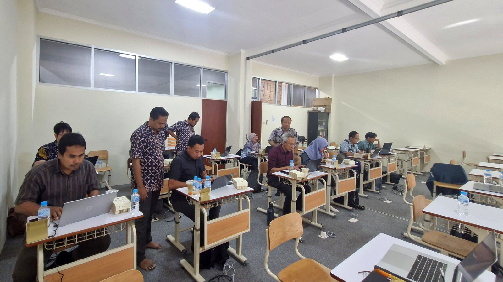
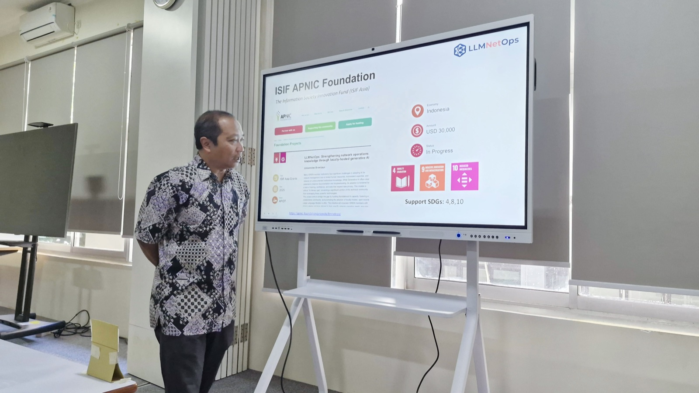
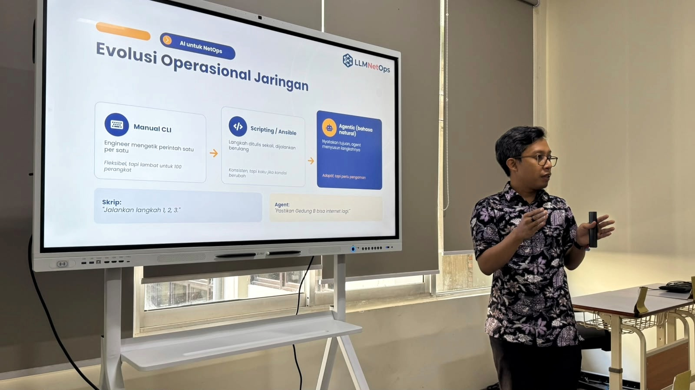
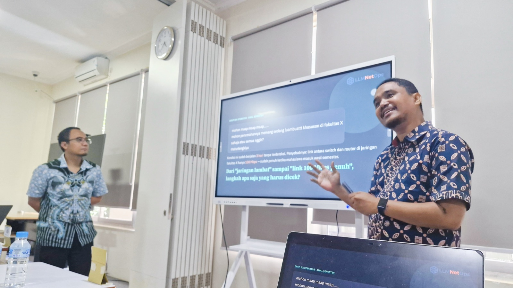
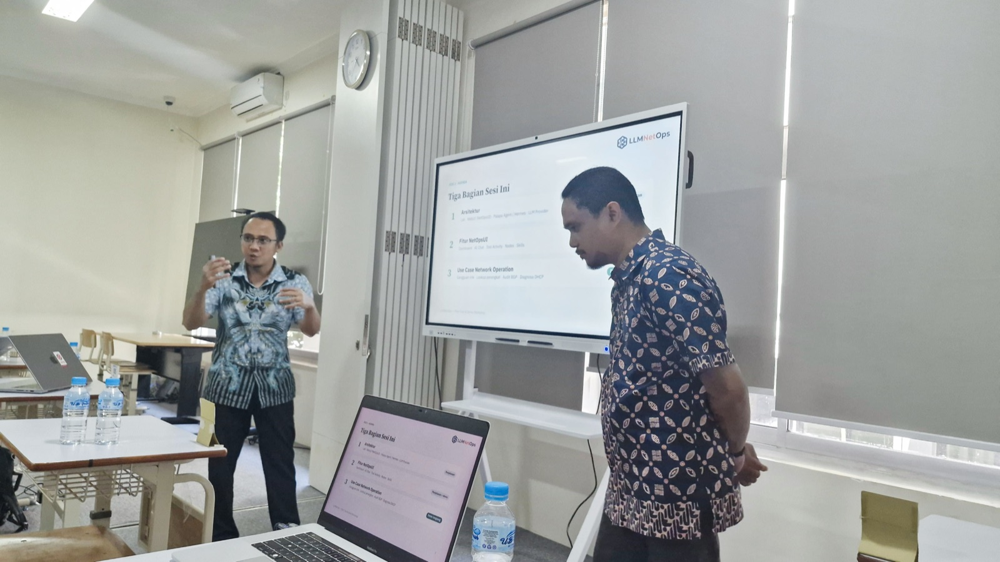
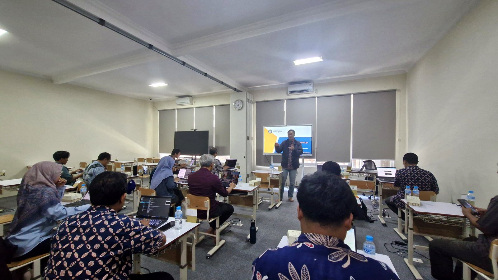

The LLMNetOps project successfully conducted its Pilot Test and Demo Workshop on Friday, September 25, 2026, at Laboratory 4, Directorate of Information Technology, Universitas Brawijaya (Gedung Rektorat, 2nd Floor). The event ran from 09.00 to 16.00 WIB and brought together network engineers and IT staff from three IDREN partner universities, namely Universitas Muhammadiyah Malang (UMM), Universitas Negeri Malang (UM), and UIN Maulana Malik Ibrahim Malang, alongside network and infrastructure engineers from Universitas Brawijaya itself.
The event was organized by the Directorate of Information Technology (DTI) Universitas Brawijaya together with the LLMNetOps project team, as part of the pilot feedback phase in the project roadmap ahead of the full Workshop Series.
About the Event
As part of the project's milestone to validate the system before full-scale implementation, the pilot test gave partner institutions a firsthand experience of the LLMNetOps platform, a locally-hosted, privacy-first AI system designed to support network operations in higher education environments. The day's agenda included a project overview, introductory sessions on AI concepts for network operations, a live demonstration of the LLMNetOps system, hands-on lab trials by participants, a focused group discussion (FGD), and completion of a pilot feedback questionnaire.
Participants represented both IT decision-makers and frontline network engineers from each institution, reflecting the project's goal of engaging both the technical and institutional dimensions of AI adoption.
Session Highlights
The workshop covered six sessions across the day:
- Session 1: Project Introduction. Background, objectives, ISIF Asia funding, and project roadmap.
- Session 2: Network Operations Fundamentals. Core concepts and challenges in managing campus network infrastructure.
- Session 3: LLM Introduction and Agentic AI Concepts. How large language models work and their application as autonomous agents in technical environments.
- Session 4: MCP (Model Context Protocol) and Mikrotik Integration. Connecting AI agents to real network devices using the MCP framework.
- Session 5: Platform Demonstration. A live demo of the LLMNetOps system in action, covering use cases such as device monitoring and automated network condition reporting.
- Session 6: Hands-on for Deploy and Configuration. Participants directly installed and configured the system on their own machines, accompanied by facilitators from the LLMNetOps technical team.

Slides and the hands-on module from this event are available at the Pilot Test Materials page.
Pilot Feedback
At the close of the session, participants completed an evaluation survey covering the relevance of the material, clarity of delivery, usability of the platform, and their confidence in deploying a local LLM at their respective institutions. The responses will serve as structured input for refining the curriculum and platform before the official Workshop Series (Series 1 and 2).
Looking Ahead
The pilot test has provided the LLMNetOps team with early feedback from all three partner institutions, offering a clear basis for improving the workshop experience. The project team will incorporate participant input, particularly around session duration, setup documentation, and advanced topics, in finalizing the materials ahead of the full workshop rollout.
For more information about the project, visit apnic.foundation/projects/llmnetops. Pilot test materials are available at llmnetops.github.io/pilot-test.html.




